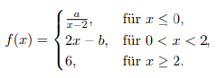
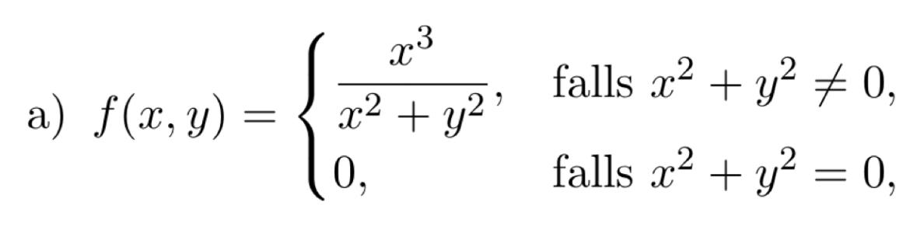
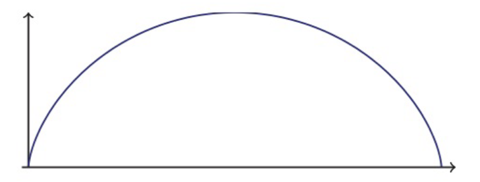
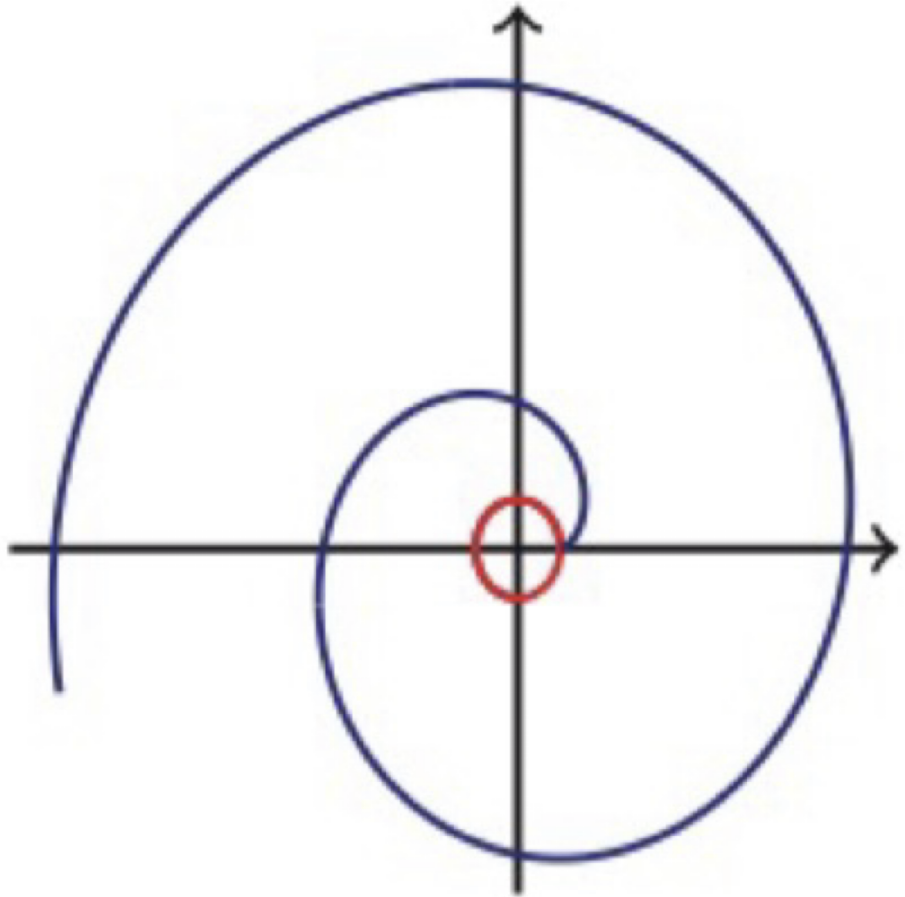
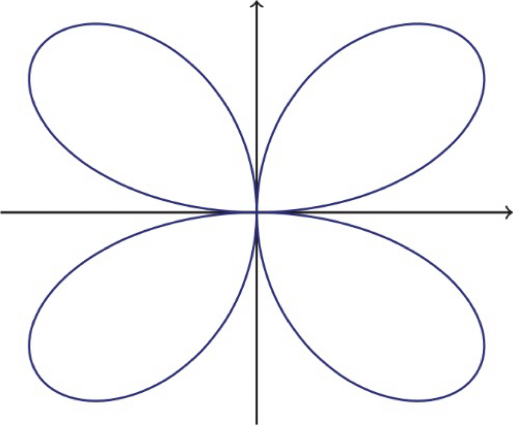

Immer gucken, ob man den Ausdruck vereinfachen kann!



$$\ln(n) \lt n^a \lt a^n \lt n! \lt n^n$$
häufige Anwendung: Fakultät
Wir müssen eine obere & eine untere Grenze def.
bei $(-1)^n \dots$

$a_n =\sqrt[n]{\dots}$

$\sum_{k=1}^{n} \frac{1}{\sqrt{n^2 + k}}$
$\lim_{x \to c} \frac{f(x)}{g(x)} = \frac{0}{0}$
$\lim_{x \to c} \frac{f(x)}{g(x)} = \frac{\pm \infty}{\pm \infty}$
$\lim_{x \to c} \frac{f(x)}{g(x)} = 0 \cdot \pm \infty$

Sobald eine Bedingung $\lnot$ stimmt, existiert d. Grenze $\lnot$
1) Fall: $x = 0$ mit $\lim_{y \to [\text{zur jeweiligen Grenze}]} \ \lor \ y = 0$ mit $\lim_{x \to [\text{zur jeweiligen Grenze}]}$
2) Fall: $y = mx \ \lor x = my$
3) Fall: $y = x^2 \ \lor x = y^2$
geometrische Reihe
p-Reihe $$\sum_{k=1}^{\infty}\frac{1}{n^p}$$
harmonische ist nur p=1:$\sum_{k=1}^{\infty}\frac{1}{n^1 = n}$
wenn $p \le 1$, dann divergiert sie, weil sie langsamer wächst als d. harmonische Reihe, weil sie bereits zu langsam ist
wenn $p \gt 1$, dann konvergiert sie, weil die schneller wächst !
Whatever this is $$\sum_{n=1}^{\infty}\frac{1}{n(n+1)}$$
Teleskopsumme $$\sum_{k=1}^{n} (a_k - a_{k+1})$$
$S_n = (a_1 - a_2) + (a_2 - a_3) + (a_3 - a_4) + \dots + (a_{n-1} - a_n) + (a_n - a_{n+1})$
N. dem Wegheben aller Terme v. $a_2$ bis $a_n$ bleiben nur d. erste Term des ersten Gliedes & d. letzte Term des letzten Gliedes übrig: $S_n = a_1 - a_{n+1}$ * $\sum_{k=1}^{\infty} (a_k - a_{k+1}) = \lim_{n \to \infty} S_n = \lim_{n \to \infty} (a_1 - a_{n+1})$ * Wenn $\lim_{k \to \infty} a_k = L$ existiert, dann konvergiert d. $\infty$-Reihe gegen: $$S = a_1 - L$$
Alterniernde Reihen $$\sum_{k=0}^{\infty} (-1)^k \cdot a_k \quad \text{oder} \quad \sum_{k=0}^{\infty} (-1)^{k+1} \cdot a_k$$
Potenzreihen
$$\sum_{k=0}^{\infty} a_k (x - x_0)^k = a_0 + a_1(x-x_0) + a_2(x-x_0)^2 + \dots$$
Taylor-Reihe $$\sum_{n = 0}^{\infty} \frac{f^{(n)}(x_0)}{n!}(x-x_0)^n$$
Binomische Reihe
$$\sum_{n = 0}^{\infty} \binom{m}{n}z^n$$
Die Bestapproximation
d. ist wie Taylorpolynom, aber global
Thema: Bestapproximation im Quadratischen Mittel ($\text{L}^2\text{-Approximation}$)
Ziel: D. Minimierungsproblem: $\mathbf{\min_{p_{n}}\int_{-1}^{1}|f(x)-p_{n}(x)|^{2}dx \text{, wobei } p_{n} \text{ ein Polynom vom Grad } n \text{ ist}}$
Berechnung d. Koeffizienten: $L^2$-Skalarprodukt
Ansatz des Bestapproximationspolynoms $$L_{n}(x)=\sum_{k=0}^{n}c_{k}P_{k}(x)$$
Berechnung der Koeffizienten $c_k$B
Für $\mathbb{C}$: $c_{k}=\frac{\langle P_{k},f\rangle}{||P_{k}||_{L^{2}(-1,1)}^{2}}$
Für. $\mathbb{R}$: $\ell_k = \frac{\langle f, P_k \rangle}{||P_k||^2}$

$P_0(x) = 1$
$P_1(x) = x$
$P_2(x) = \frac{1}{2} \left( 3x^2 - 1 \right)$
$P_3(x) = \frac{1}{2} \left( 5x^3 - 3x \right)$
D. einzige Unterschied zu Legendre-Polynome ist, dass wir jzt. Trigonometrische Funktionen verw.
Fourier-Reihen: $\frac{1}{2}a_0 + \sum_{k=1}^{n}(a_k \cos(kx) + b_k \sin(kx))$
$a_k = 2 \text{Re}(c_k) = \frac{1}{\pi} \int_{-\pi}^{\pi} f(x) \cos(kx) dx$
$b_k = -2 \text{Im}(c_k) = \frac{1}{\pi} \int_{-\pi}^{\pi} f(x) \sin(kx) dx$
wichtig: $\cos(x)=$ gerade & $\sin(x)=$ ungerade
Wenn z.B. $f(x) = x$, dann wissen wir sofort, dass $x$ ungerade ist = $a_k$ (also $\cos(x)$) $= 0$
Wir müssen also nur $b_k$ berechnen
Re = Realteil
Im = Imaginärteil
$P_0(x) = 1$
$P_1(x) = x$
$P_2(x) = \frac{1}{2} \left( 3x^2 - 1 \right)$
$P_3(x) = \frac{1}{2} \left( 5x^3 - 3x \right)$
$$\sum_{k=0}^{\infty} a \cdot x^k = 1 + x + x^2 + x^3 + \dots$$ mit a = 1
Grenzwert dieser Reihe: $\boxed{\sum_{k=0}^{\infty} a \cdot r^k = \frac{a}{1-r}}$
Seien $\sum_{k=1}^{\infty} a_k$ und $\sum_{k=1}^{\infty} b_k$ zwei Reihen, deren Glieder ab einem Index $k_0$ nicht-negativ sind ($a_k \ge 0$ und $b_k \ge 0$).
Seien $\sum_{k=1}^{\infty} a_k$ & $\sum_{k=1}^{\infty} b_k$ zwei Reihen, deren Glieder ab einem Index $k_0$ nicht-negativ sind ($a_k \ge 0$ und $b_k \ge 0$).
Sei $(a_k)_{k \in \mathbb{N}}$ eine Folge:
Bsp.:
Reihe: $\sum_{n=0}^{\infty} a_n$, wobei d. Glieder $a_n = \frac{1}{n!} x^n$ sind $$\left| \frac{a_{n+1}}{a_n} \right| = \left| \frac{\frac{1}{(n+1)!} x^{n+1}}{\frac{1}{n!} x^n} \right|$$ $$\left| \frac{x^{n+1}}{(n+1)!} \cdot \frac{n!}{x^n} \right|$$
Potenzen: $\frac{x^{n+1}}{x^n} = x$
Fakultäten: $\frac{n!}{(n+1)!} = \frac{n!}{(n+1)n!} = \frac{1}{n+1}$ $$\left| x \cdot \frac{1}{n+1} \right| = |x| \cdot \frac{1}{n+1}$$
Jzt. berechnet man den Grenzwert $\rho$ für $n \to \infty$:
$$\rho = \lim_{n \to \infty} \left| x \right| \cdot \frac{1}{n+1}$$
Da $|x|$ für jedes $x$ eine feste, endliche Zahl ist und $\lim_{n \to \infty} \frac{1}{n+1} = 0$:
$$\rho = |x| \cdot 0 = \mathbf{0}$$
$\rho = 0 \implies \sum_{n=0}^{\infty} \frac{1}{n!} x^n \text{ ist absolut konvergent } \forall x \in \mathbb{C}$
Daher konvergiert d. Exponentialreihe $\forall x$ im gesamten komplexen Raum.
Verwendung: Alterniernde Reihen
Kriterien:
Monotonie: D. Folge der Beträge $(a_k){k \in \mathbb{N}}$ muss monoton fallend sein:$$a{k+1} \le a_k \quad \text{für fast alle } k$$
Nullfolge: D.Folge d. Beträge muss eine Nullfolge sein: $$\lim_{k \to \infty} a_k = 0$$
Besonders nützlich, wenn Glieder d. Reihe Potenzen v. $k$ enthalten. $$\mathbf{\rho = \lim_{k \to \infty} \sqrt[k]{|a_k|}}$$
Konvergenz:
Bsp.: $$\sum_{k=1}^{\infty} \left( \frac{3k}{2k + 1} \right)^k$$
$$\rho = \lim_{k \to \infty} \sqrt[k]{|a_k|} = \lim_{k \to \infty} \sqrt[k]{\left| \left( \frac{3k}{2k + 1} \right)^k \right|}$$
$$\rho = \lim_{k \to \infty} \sqrt[k]{|a_k|} = \lim_{k \to \infty} \sqrt[\cancel{k}]{\left| \left( \frac{3k}{2k + 1} \right)^{\cancel{k}} \right|}$$
$$\rho = \lim_{k \to \infty} \frac{3k}{2k + 1}$$
$$\rho = \lim_{k \to \infty} \frac{3}{2 + \frac{1}{k}}$$
$$\rho = \frac{3}{2 + 0} = \mathbf{\frac{3}{2}}$$
Wenn eine Folge n. unten beschränkt & monoton fallend ist, dann konvergiert sie !
Bei explizieten Folgen $\to$ Differenz bilden:
Bei Produkten oder Potenzen $\to$ Quotient:
Rekursive Folgen $\to$ Induktion
$$T_n(x;a) = \sum_{k=0}^n \frac{f^{(k)}}{k!} \cdot (x-a)^k$$
$$\sin(\pi x)^2$$ $$u(v) = (v)^2 \to 2(v) $$ $$v(w) = \sin(\pi x) \to \cos(w)$$ $$w(x) = \pi x \to \pi$$ $$= 2(\sin(\pi x)) \cdot \cos(\pi x) \cdot \pi \iff \overbrace{2 \pi}^{\text{Identität}} (\sin(\pi x)) \cdot \cos(\pi x) $$
$$\iff \pi = 2 \cdot (2 \sin(\pi x) \cdot \cos(\pi x)) \iff \pi \sin(2 \pi x)$$
$$\underline{\underline{f'(x)= \pi \sin(2 \pi x)}}$$
Ergebnis : $\cos^2(0) = 1$
Formel = ${x_{n+1} = x_n - \frac{f(x_n)}{f'(x_n)}}$
Trigonometrie:$\sin(2 \alpha) \iff 2 \sin(\alpha) \cos(\alpha)$
$\cos(\alpha)^2 + \sin(\alpha)^2 \iff 1$
$\cos^2(\alpha) - \sin^2(\alpha) \iff \cos(2\alpha)$
$\cos^2(t) = \frac{1}{2} (1 + \cos(2t))$ oder $\frac{1+ \cos(2t)}{2}$
$\sin(x) \cdot \cos(x) = \frac{1}{2} \sin(2x)$
$\sin^2(t) = \frac{1-\cos(2t)}{2}$
Kehrbruch:
Verhältnis:
Umkehrfunktion:
Hyperbelfunktion:
$\sinh(x) = \frac{e^x - e^{-x}}{2} \leftrightarrow \cosh(x) = \frac{e^x + e^{-x}}{2}$
$\frac{d}{dx}\arctan(x) = \frac{1}{1+x^2}$
$\frac{d}{dx} \operatorname{arccot}(x) = - \frac{1}{1+x^2}$
Additionstheorem:WurzelnLogaririthmusExponentialfunktionBreite: Intervall auf x-AchseHöhe = f(x) an den IntervallgrenzenSummenregel$$\int (x^2 + 2) ,dx = \int x^2 ,dx + \int 2 ,dx$$
Potenzregel:$$f(x) = x^n \to F(x) = \frac{1}{n+1}x^{n+1}+C $$
e-Funktion$$f(x) = e^x \to F(x) = e^x + C$$
Algm. Exponentialfunktion$$f(x) = a^x \to \frac{a^x}{\ln(a)} + C$$
Partielle Integration (Produktintegration)$$\int u(x) \cdot v'(x) ,dx = u(x) \cdot v(x) - \int u'(x) \cdot v(x) ,dx$$
Substitutionsregelunbestimmtes Integral: $\int$
Bestimmtes Integral:
Trigonometrsche Substitution:
Fundamentalsatz der Analysis$$\int_{a}^{b} f(x) ,dx = F(b) - F(a)$$
Zerlegung des Integrationsintervalls$$\int_{a}^{b} f(x) ,dx = \int_{a}^{c} f(x) ,dx + \int_{c}^{b} f(x) ,dx \quad \text{für } a < c < b$$
Wechseln d. Grenzen$$\int_{a}^{b} f(x) ,dx = - \int_{b}^{a} f(x) ,dx$$
$$\int_{a}^{b} y(t) \cdot x(t) ,dt$$
$$||\dot{c}|| = \int_{a}^{b} \sqrt{(x(t))^2 + (y(t))^2} ,dt$$
$$s(t) \to t(s)$$
$$\langle z.B.: c(t), \dot{c}(t)\rangle$$
$$||\dot{c}|| =\int_{a}^{b} \sqrt{(x'(t))^2 + (y'(t))^2}$$
Zikloide: 
Symmetrie: $4\int_{\frac{t}{4}}^{\frac{t}{4}} \dots$
Fläche: $\int_{a}^{b} y(x) \cdot x'(t) ,dt$
Länge: $$\int_{a}^{b} \sqrt{(y'(t))^2+(x'(t))^2}$$
Astroide:

Symmetrie: $4\int_{\frac{t}{4}}^{\frac{t}{4}} \dots$
Fläche: $\int_{a}^{b} y(x) \cdot x'(t) ,dt$ für $t \in$ {I. Quadrant}
Länge: $$\int_{a}^{b} \sqrt{(y'(t))^2+(x'(t))^2}$$
Kreisvolvente: 
Vierblattrose: 
Symmetrie: $4\int_{\frac{t}{4}}^{\frac{t}{4}} \dots$
Fläche: $\int_{a}^{b} y(x) \cdot x'(t) ,dt$
Gerano-Lemniskate

Symmetrie: $2 \int_{\frac{t}{2}}^{\frac{t}{2}} \dots$
Fläche: $\int_{a}^{b} y(x) \cdot x'(t) ,dt$
Schraublinie

Länge: $$\int_{a}^{b} \sqrt{(y'(t))^2+(x'(t))^2}$$
Parametisieren: $$s(t) \to t(s)$$
$$f^{\nabla}(x,y) = \binom{\frac{d}{dx}f(x,y)}{\frac{d}{dy}f(x,y)}$$
$f(x,y) = c$
Bsp.:
$$\frac{7}{24}+\frac{9}{40}+\frac{11}{60}$$ Wie bekomme ich den gleichen Nenner ?
KgT
Primfaktorzerlegung
$24 = 6 \cdot 4 = 2 \cdot 3 \cdot 2 \cdot 2 = [2^3,3]$ $40 = 2 \cdot 20 = 2 \cdot 2 \cdot 10 = 2 \cdot 2 \cdot 2 \cdot 5 = [2^3, 5]$ $60 = 2 \cdot 30 = 2 \cdot 2 \cdot 15 = 2\cdot 2 \cdot 3 \cdot 5 = [2^2, 3 , 5]$
$2^3 \cdot 3 \cdot 5 = 8 \cdot 3 \cdot 5 = \underline{120}$
Ich kann die gefundenen Faktoren auch zum erweitern des Zählern verwenden:
Bsp.:
$$\frac{84}{120}$$
Wie bekomme ich d. größte Zahl zum kürzen ?
GgT
Primfaktorzerlegung:
$84 = 2 \cdot 42 = 2 \cdot 2 \cdot 21 = 2 \cdot 2 \cdot 3 \cdot 7 = [2^2,3,7]$ $120 = 2 \cdot 60 = 2 \cdot 2 \cdot 30 = 2 \cdot 2 \cdot 2 \cdot 15 = 2 \cdot 2 \cdot 2 \cdot 3 \cdot 5 = [2^3,3,5]$
$2^2 \cdot 3 = 4 \cdot 3 = \underline{12}$ $= \frac{84 \div 12 }{120 \div 12} = \underline{\frac{7}{10}}$
D. rekursive Regel:
n!!:
$n!! = \mathbf{1 \cdot 3 \cdot \dots \cdot (n-2) \cdot n}$
$n!!! = \mathbf{3 \cdot 6 \ \dots \cdot 6 \cdot 3}$
$(2n+1)!! = \mathbf{1 \cdot 3 \cdot \dots \cdot (2n-3) \cdot (2n-1) \cdot (2n+1)}$
Bsp.:
$$(a+b)^n = \sum_{k=0}^{n} \binom{n}{k} \cdot a^{n-k} \cdot b^{k}$$
$$f(-x) = |-x| = |x| = f(x)$$